專案與案例
從工業 AI 平台到研究作品，依類型或時間瀏覽。平台內有獨立問題與交付內容的功能，整理為各自的案例，並保留與主專案的關係。
資料、診斷與場域交付
4 則從資料品質與判讀邊界出發，建立可測試及交接的分析流程。
工業設備診斷方法
診斷產品線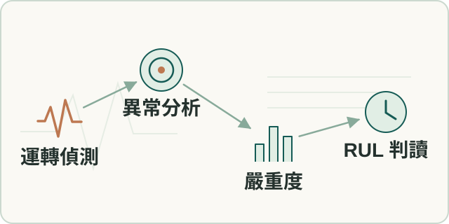
工作流程示意故障型態、嚴重度及劣化時間回答不同問題，資料不完整時需揭露不確定性。
2026 年診斷研究與開發紀錄
- 我的貢獻
- 本人設計資料品質、運轉偵測、故障分類、ISO 及 RUL 的分層方法，檢查異常率分母及抽樣偏差。
- 成果
- 留下分層診斷契約、品質降級規則及抽樣研究比較，time-bin 尚未正式選型。
VAD · ISO 20816 · RUL
技術細節與工作範圍
設備振動分析驗證
場域 POC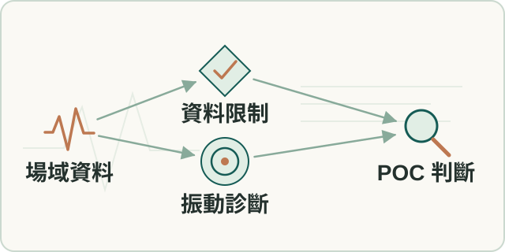
工作流程示意資料覆蓋、運轉狀態與抽樣方式影響診斷，需驗證報告結論成立的條件。
2026 年 POC 紀錄
- 我的貢獻
- 本人主導基本資訊、前處理、VAD、分類、ISO 與 RUL 驗證順序，以 notebooks 和 AI 協作核對數值與判讀。
- 成果
- 建立可複用診斷與報告方法，保留低 coverage 及低信心時的降級，供後續產品化。
VAD · ISO 20816 · LangGraph
大規模設備事件分析
場域分析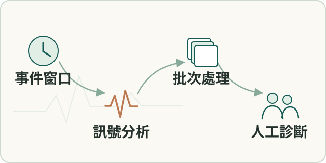
工作流程示意波形量大且沒有交接 SOP，需選出有決策價值的事件並保留可回查資料。
2025 年分析紀錄
- 我的貢獻
- 本人與現場工程師及品保對齊設備、格式及事件範圍，採完整 DB 加事件窗 WAV，用批次腳本串接分析與人工審查。
- 成果
- 完成多輪事件報告及可重跑交接流程，未選時段及全設備健康狀態不由此推定。
SQLite · Windows batch · multiprocessing · PRPD
設備電流資料複核與說明
場域分析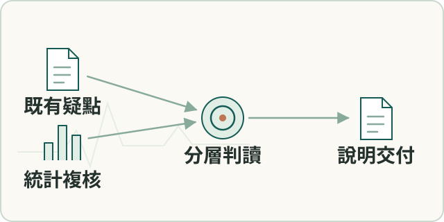
工作流程示意客戶對負載及穩態振動提出疑問，需重建統計口徑並區分關聯及根因。
2026 年分析紀錄
- 我的貢獻
- 本人把客戶三項觀察轉成可檢定問題，以分鐘中位數、非參數檢定及效應量複核，整理分析與說明。
- 成果
- V1.3 分析及客戶說明簡報已確認交付，保留待現場量測的根因假說及驗證需求。
Kruskal–Wallis · Mann–Whitney · Cliff’s delta
研究、空間分析與早期作品
11 則研究發表、學位研究、課程及競賽；區分獨立研究與團隊成果。
訪區路線與離散程度分析
空間分析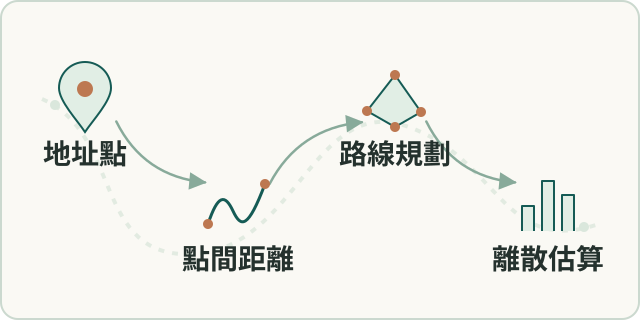
工作流程示意訪區分散程度影響訪員路程及預算，需可計算距離及代表路線。
2020 年實習實作紀錄
- 我的貢獻
- 本人完成訪區分組、點對距離、保守缺值補估與 TSP 路線方法，將正式樣本轉成路程規劃資料。
- 成果
- 輸出訪區總距離、平均距離、樣本順序及路線地圖，供調查規劃。
Python · Selenium · OR-Tools · Folium
動態公車路線與班次規劃
獨立專案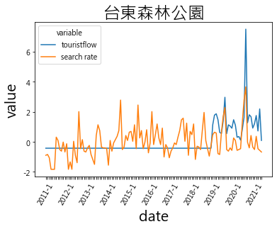
原 notebook 分析圖：景點人流與搜尋趨勢；非路線成果圖。（點圖放大）觀光需求隨時段變動，路線及班次規劃需整合需求與距離。
2021 年建檔紀錄；專案期間待補
- 我的貢獻
- 本人整合觀光人流、Google Trends、Popular Times 及景點距離，以需求分攤和 TSP 探索路線班次。
- 成果
- 完成需求分攤、距離矩陣及 TSP 流程，以地圖、Gantt、Sankey 呈現路線與班次。
Python · OR-Tools · Folium · Google Trends
旅運需求預測研究（2021）
論文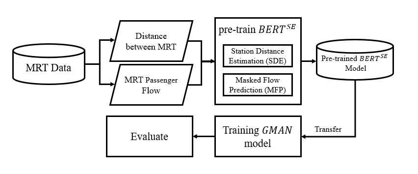
共同研究原圖：BERT 動態嵌入與旅客流量預測流程。（點圖放大）旅客流量估計需表達隨時間變動的交通關係。
2021 年論文發表
- 我的貢獻
- 參與共同研究，研究動態嵌入在旅客流量估計的應用；個人模組責任尚未細分。
- 成果
- 形成 IIAI AAI 2021 正式論文及 Competitive Paper Award。
動態嵌入
動態交通網路與流量預測（2024）
期刊論文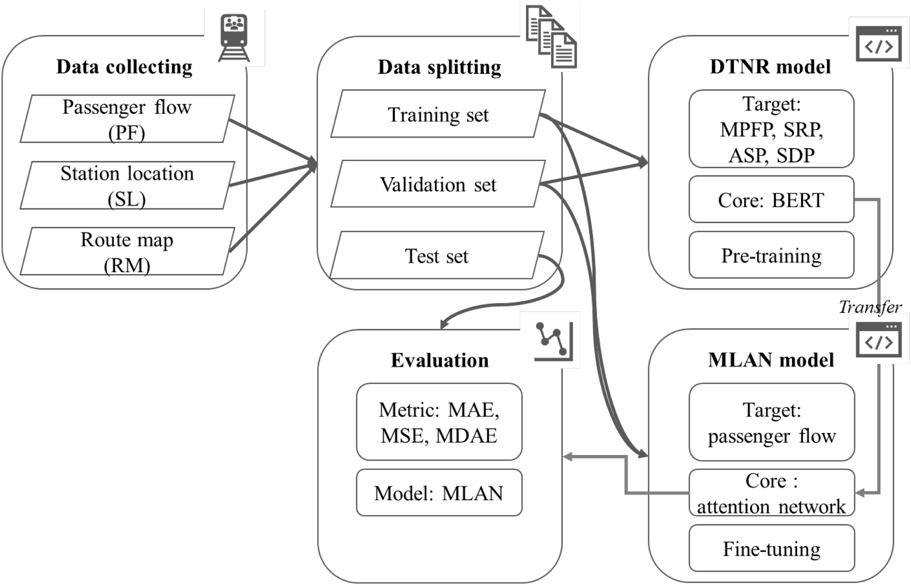
共同研究原圖：交通網路表示學習與流量預測流程。（點圖放大）捷運流量預測需將動態交通網路關係納入模型表示。
2024 年期刊發表
- 我的貢獻
- 參與共同研究，研究動態網路表徵及捷運流量預測，個人責任依共同研究範圍呈現。
- 成果
- 形成 Knowledge-Based Systems 2024 正式期刊論文。
動態交通網路表徵
金融文本情感辨識研究（2020）
論文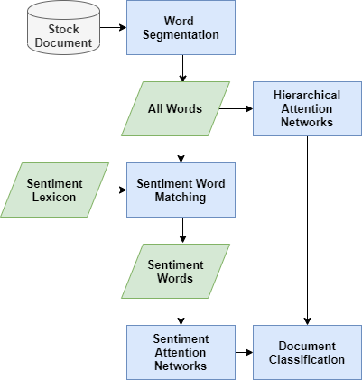
共同研究原圖：情感詞與階層式注意力模型。（點圖放大）金融文章情感判讀需考慮詞彙及文章層次脈絡。
2020 年論文發表
- 我的貢獻
- 參與情感詞及階層式關注網路的共同研究，將學生研究計畫延伸為正式發表。
- 成果
- 由學生研究計畫延伸為 TCSE 2020 論文，留有核定及發表證明。
情感詞典 · Hierarchical Attention Network
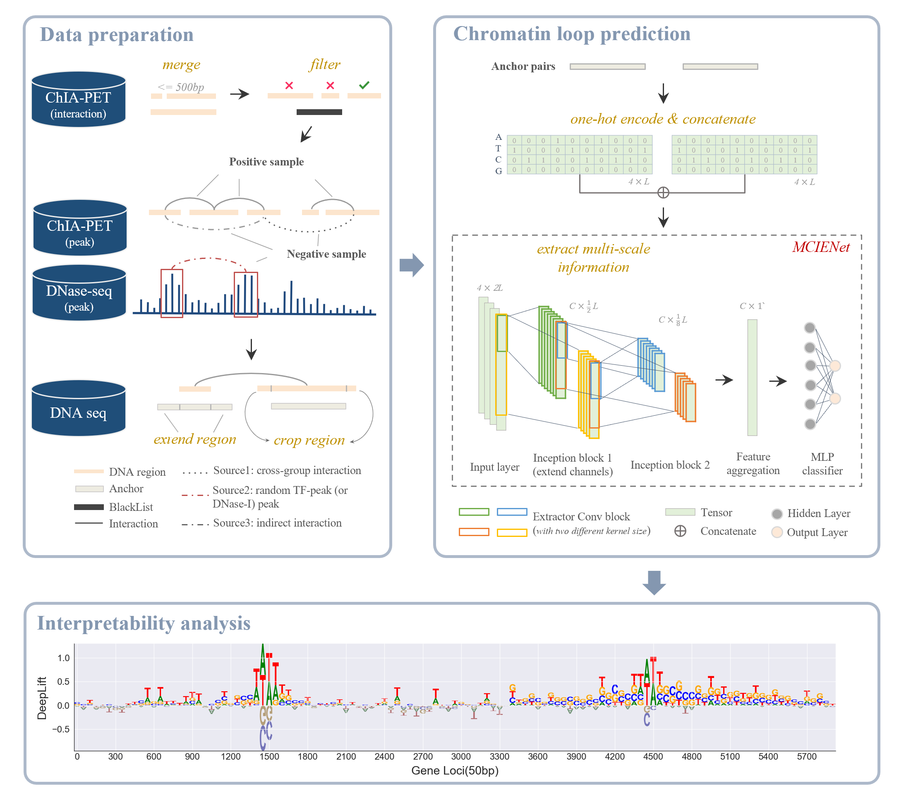
原始研究流程：資料準備、MCIENet 與可解釋性分析；部分前處理基於 ChINN。（點圖放大）DNA 序列不同尺度訊號需轉成可檢驗的三維染色質交互作用預測。
2024 年碩士論文
- 我的貢獻
- 本人主導研究問題、架構、實驗、論文和程式整理；部分前處理整合第三方方法。
- 成果
- 完成碩士論文、研究程式及配置，提供消融、跨資料集評估與模型解釋。
CNN · 多尺度資訊擷取 · XAI · ChINN
E.SUN Fugle 金融資訊推薦
課程競賽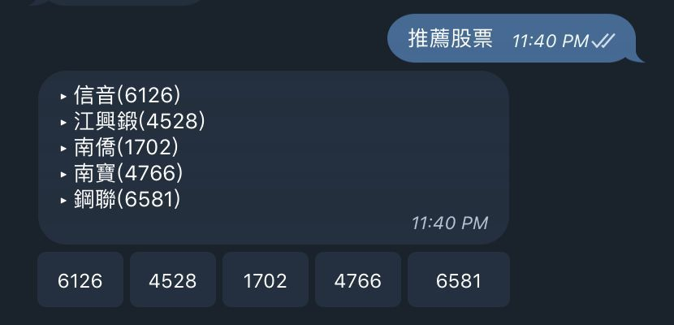
團隊原型畫面：股票推薦機器人；歷史競賽展示。（點圖放大）股票推薦需結合財務特徵及訂閱、瀏覽行為。
2020 年競賽紀錄
- 我的貢獻
- 團隊比較 item-based、user-based、KD-tree 及共現關係，形成推薦與推播；個人模組尚未細分。
- 成果
- 團隊完成推薦／推播方案，獲金融程式設計課程競賽優勝。
Item-based recommendation · User-based recommendation · KD-tree
PropGMAN 不動產時空分析
團隊競賽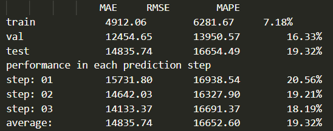
團隊實驗原始輸出：預測誤差評估；數值僅屬該次實驗。（點圖放大）土地價格及交易量受區域與時間變化影響。
2022 年競賽紀錄
- 我的貢獻
- 三人團隊以實價登錄、區域分組及參考點建構時空模型；個人模組尚未細分。
- 成果
- 三人團隊完成訓練配置、區域評估、重現流程及決賽報告，獲創意獎。
時空模型 · 配置驅動訓練
雙北防災資源分析系統 · Taipei Dashboard 2025
黑客松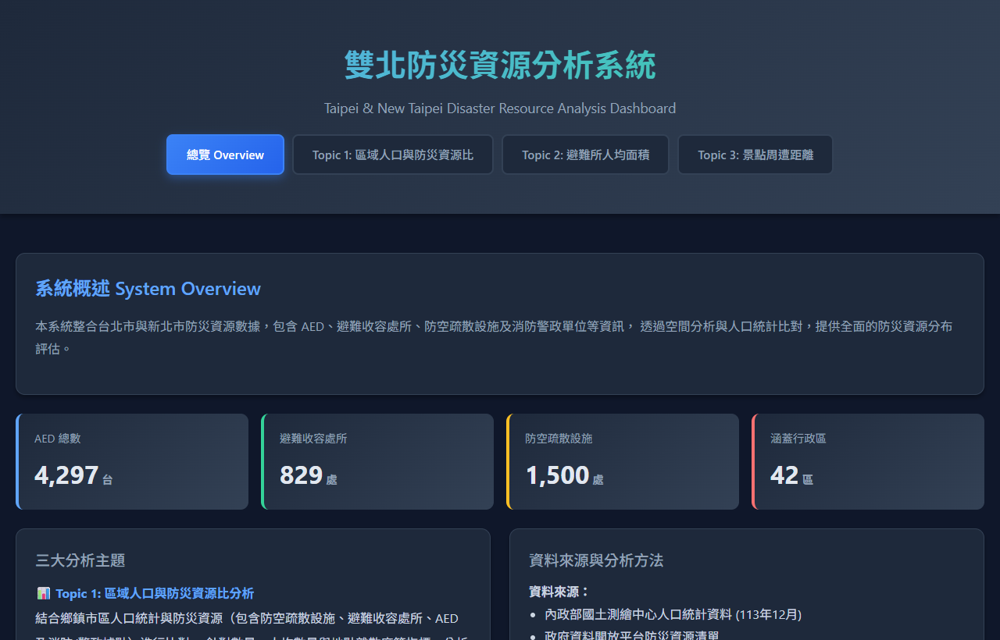
團隊公開儀表板（隊友範本）；本人負責題目發想與資料蒐集。（點圖放大）景點周邊防災資源的空間配置需整理成易讀資訊。
2025 年黑客松紀錄
- 我的貢獻
- 負責題目發想與資料蒐集，與團隊探討人口、景點與防災資源配置；公開儀表板採隊友範本，個人 repository 為團隊作品的 fork。
- 成果
- 團隊完成防災資源分析作品與專案說明，晉級 2025 雙北城市儀表板黑客松決賽。
空間分析
團隊作品／我的 fork · 隊友原始專案
Horus 多鏡頭人物追蹤
畢業專題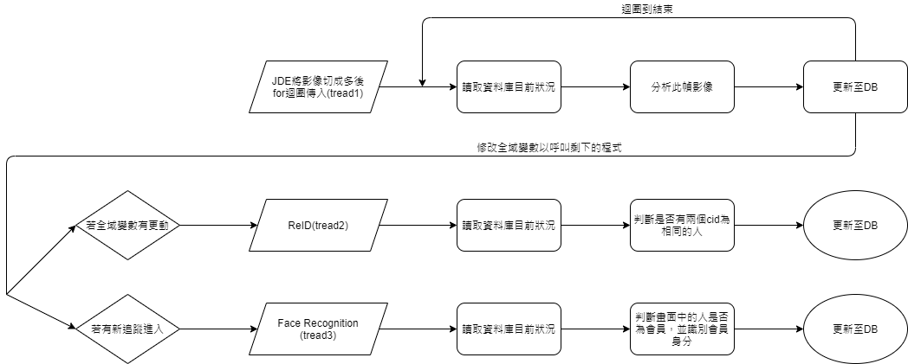
團隊原始流程圖：追蹤、再辨識與資料庫更新。（點圖放大）多鏡頭追蹤需跨鏡頭匹配同一人並串接記錄。
2020 年畢業專題紀錄
- 我的貢獻
- 本人主要負責再辨識特徵整合、取樣匹配、餘弦相似度、雙門檻及記錄佇列，FastReID 為第三方基礎。
- 成果
- 團隊完成追蹤、再辨識與臉部辨識系統，獲畢業專題第一名。
FastReID · Cosine similarity · Person ReID
Distributed Spark Recovery
課程專案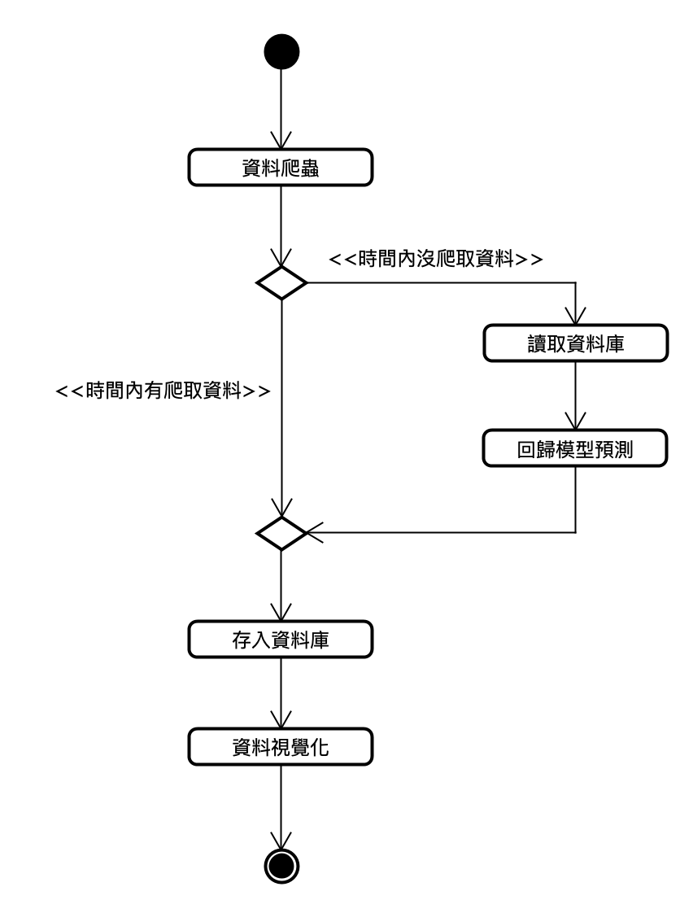
團隊原始流程圖：爬取失敗時的資料補全路徑。（點圖放大）擷取失敗造成時序缺漏，需串接偵測、補復及展示。
2022 年課程專案
- 我的貢獻
- 本人負責 Spark cluster、GitHub 及展示影片，以 Vagrant 建置一台 master、兩台 worker；其他模組由隊友負責。
- 成果
- 團隊完成擷取、缺漏偵測、Spark MLlib 及儀表板串接的課程系統。
Apache Spark · Vagrant · Spark MLlib · InfluxDB · Plotly · Dash
人與 AI 協作方法
3 則把需求、證據、測試與人工審查放進持續運作的開發流程。
AI 協作開發治理
工程方法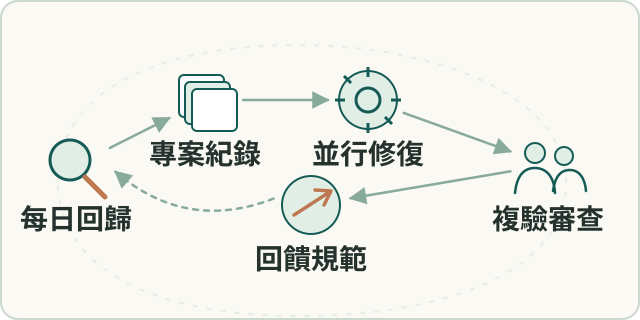
工作流程示意AI 加快實作後，錯誤假設、證據失真及待審分支需可追蹤控制流程。
2026 年流程運行紀錄
- 我的貢獻
- 本人設計流程、品質門檻並審查結果；AI agents 執行掃描、修復及測試，reviewer 決定合併與發布。
- 成果
- 形成已運行的每日測試、監控、議題及隔離修復流程，PR 進人工審查，修正回饋契約與測試。
Git worktree · systemd timer · Bitbucket · AI agents
技術細節與工作範圍
工程文件與知識系統
團隊知識管理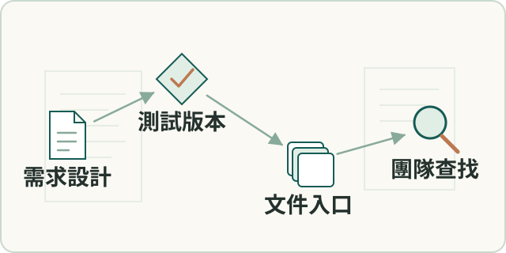
工作流程示意需求、測試與版本散落，各角色難從共同依據理解現況。
2026 年文件系統紀錄
- 我的貢獻
- 本人參與文件資訊架構及治理，將底層工程紀錄連到依讀者分層的文件站及維護流程。
- 成果
- 建立可搜尋的文件入口，連結設計、issue、測試、release、手冊與管理摘要。
VitePress · Markdown
技術細節與工作範圍
交付追蹤與工程協作
工作流程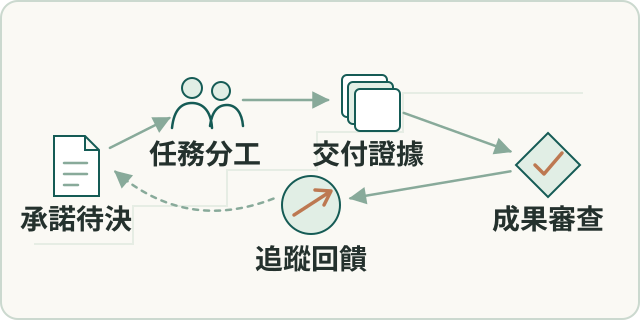
工作流程示意跨 repo 工作及交付承諾需共同追蹤，實習研究需與產品責任分開。
2026 年交付協作紀錄
- 我的貢獻
- 本人設計帶人工裁定門檻的專案空間，收斂議題並設計實習生題目、教材及進度判讀；研究產出歸原作者。
- 成果
- 留下承諾、待決追蹤、議題核實及指導紀錄，研究產出歸原作者，人工決定是否進產品。
YAML · Git worktree · AI agents